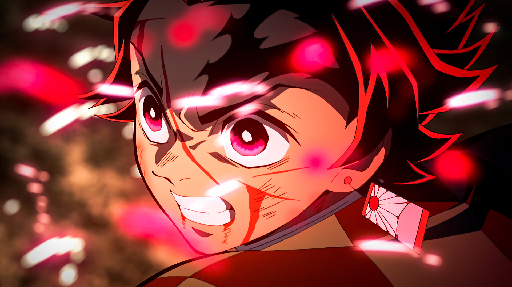

About Tanjiro
Tanjiro is a Demon Slayer in the Demon Slayer Corps, who joined to find a remedy to turn his sister, Nezuko Kamado, back into a human and to hunt down and kill demons, and later swore to defeat Muzan Kibutsuji the King of Demons, in order to prevent others from suffering the same fate as him.
Tanjiro and his friends
Tanjiro's Characteristics
- He's trying to save his sister
- He's very powerful
- He helps everyone
Tanjiro's Friends
Tanjiro has some avesome friends. His best friends are Zenitsu and Inosuke. They are very strong. Click on the links below to read more about them: